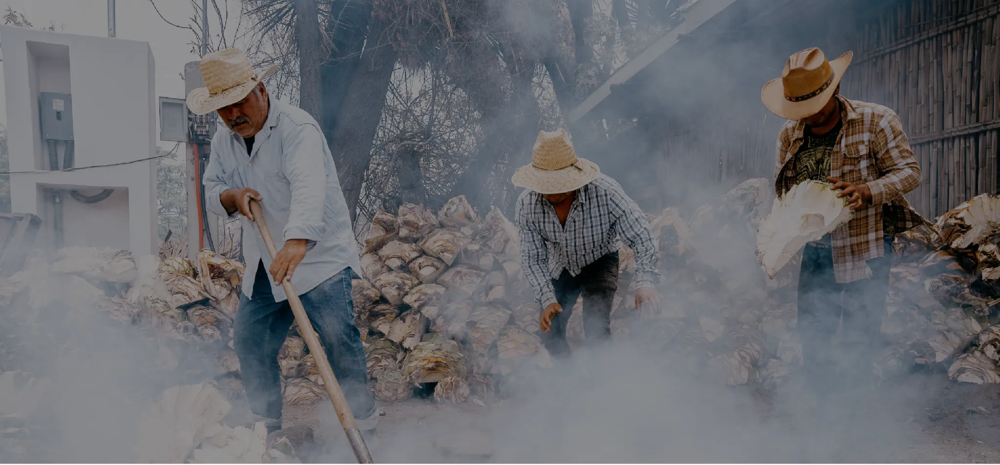
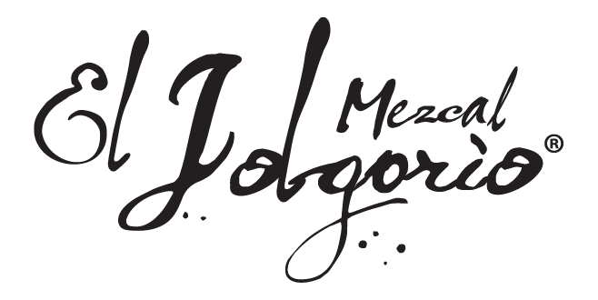
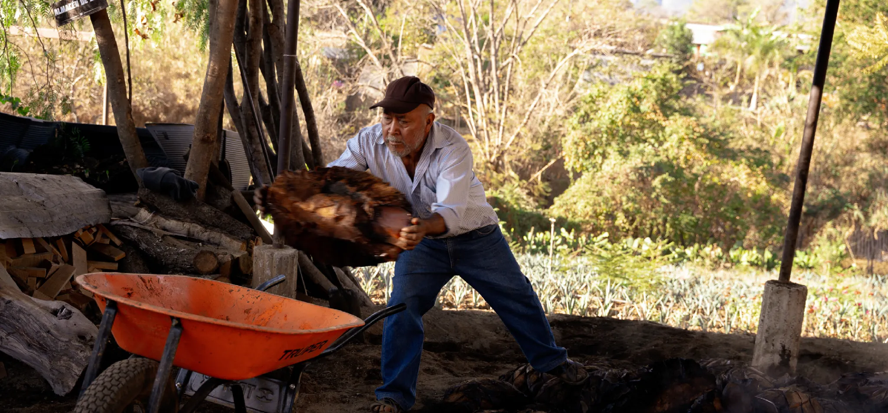
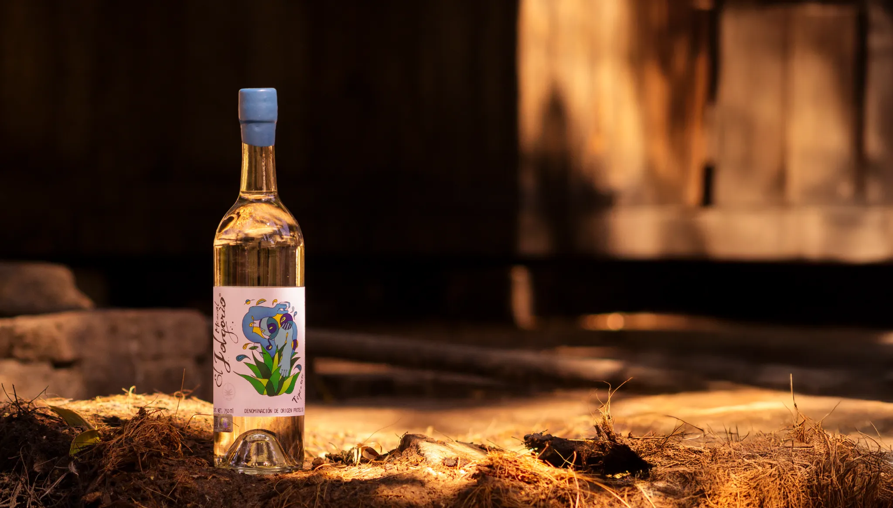
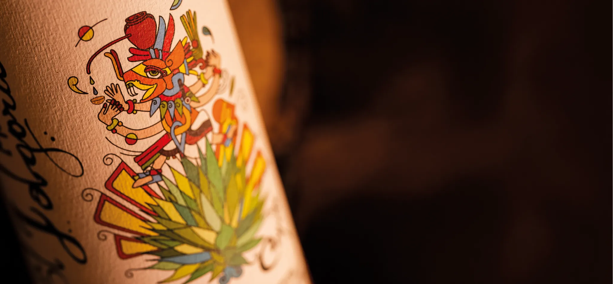
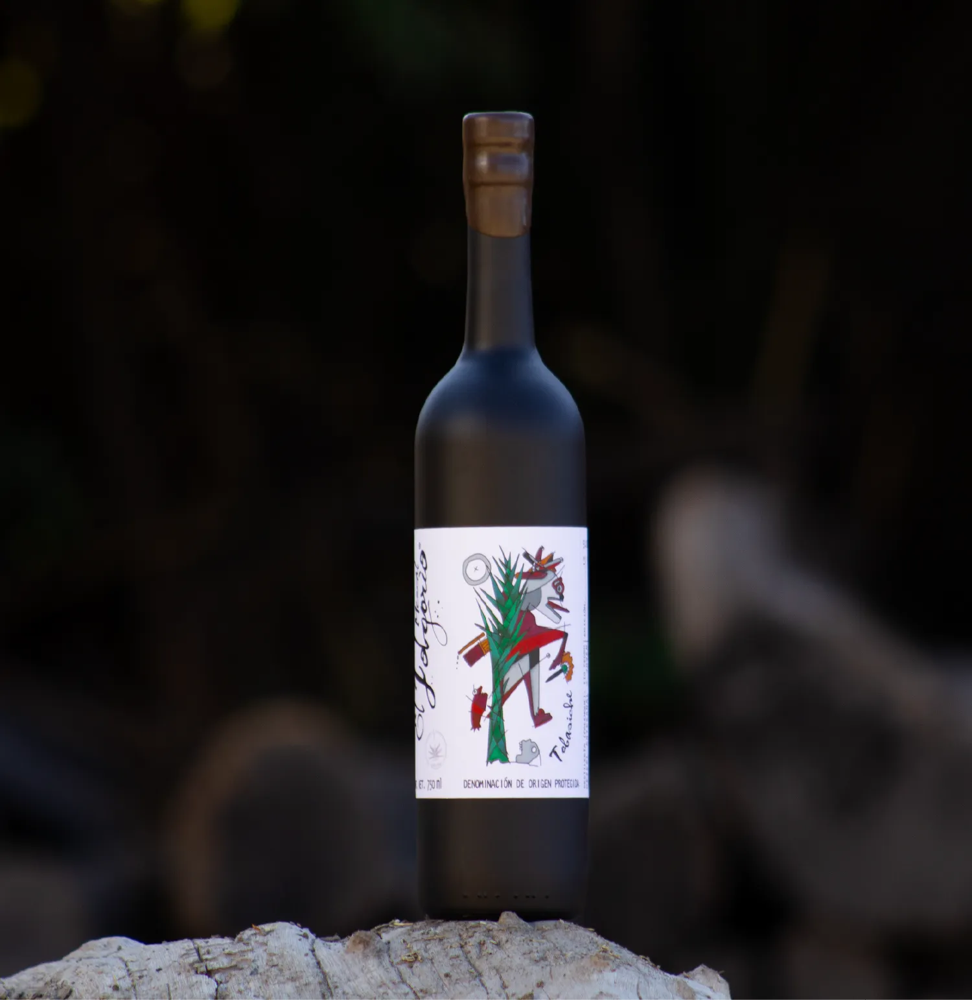
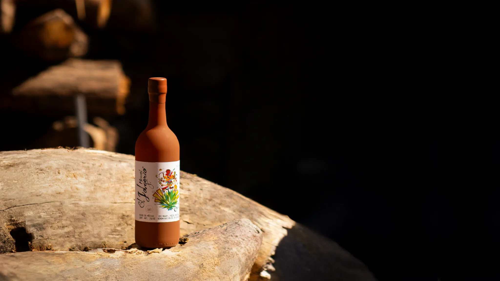

Cada Mezcal es una expresión única de los Magueyes silvestres,
reflejo de la sensibilidad, el conocimiento y el arte de cada
Maestro Mezcalero.


Nuestra historia
Desde 2010, honramos la riqueza de Oaxaca y lo que hace único al mezcal artesanal: su calidad de ser irrepetible.
Elaboramos cada una de nuestras expresiones con magueyes silvestres y semi-cultivados, los cuales, pueden tardar más de 20 años en madurar, haciendo que cada destilación sea un evento único.

En El Jolgorio reunimos a los mejores Maestros Mezcaleros, quienes expresan fielmente el carácter de Oaxaca a través de diversos magueyes limitados cuidadosamente seleccionados. Cada expresión es una experiencia irrepetible de sabores y aromas.
COMPRARVariedades
Cuishe | Madrecuishe | Mexicano
Pechuga | Tepeztate | Tobalá
Nuestro proceso
 Maguey semicultivado
Maguey semicultivado Horno subterráneo de piedra volcánica
Horno subterráneo de piedra volcánica Tahona
Tahona Tinas de madera al aire libre
Tinas de madera al aire libre Doble destilación en alambique de cobre
Doble destilación en alambique de cobre

ANTOLOGÍA
Llevamos la experiencia de El Jolgorio a su máxima expresión en una curada selección de mezcales de autor con disponibilidad limitada, lotes pequeños e historias únicas.
Antología reúne dos expresiones excepcionales:
Selecto y Ancestral.
Selecto
Nuestras Jolgorios Selectos reúnen lotes limitados que revelan la rareza de magueyes silvestres difíciles de obtener. Cada botella es una memoria grabada en el tiempo, que nunca se volverá a repetir.
COMPRAR
Variedades
Arroqueño | Coyote | Jabalí
Karwinskii | Sierrudo | Tobasiche
Nuestro proceso
- Maguey semicultivado
- Horno subterráneo de piedra volcánica
- Tahona
- Tinas de madera al aire libre
- Doble destilación en alambique de cobre

Ancestral
En Sola de Vega, Oaxaca, existe un método de producción de mezcal que ha permanecido intacto durante siglos y ha sido resguardado por nuestros Maestros Mezcaleros: la técnica ancestral.
La molienda se hace forma manual y se destila en ollas de barro, dando lugar a la experiencia definitiva para la degustación de mezcal.
Variedades
Arroqueño | Coyote | Mexicano
Sierrudo | Tobalá | Tobasiche
Nuestro proceso
- Maguey semicultivado
- Horno subterráneo de piedra volcánica
- Tahona
- Tinas de madera al aire libre
- Doble destilación en olla de barro